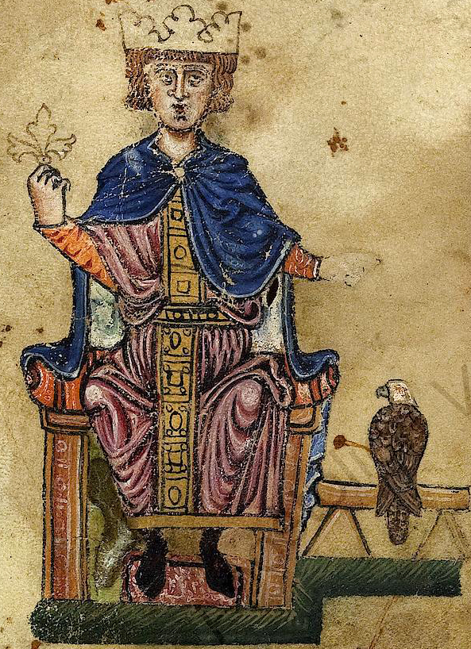
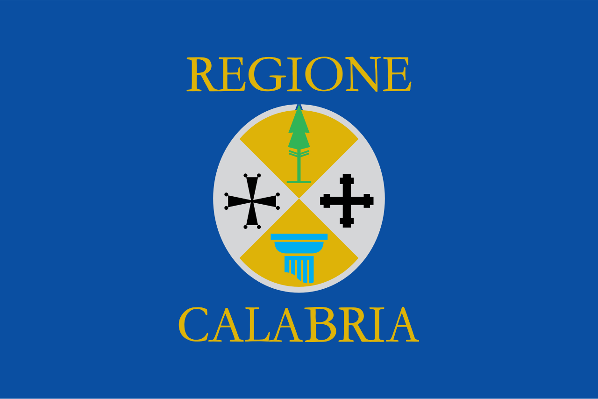

Nel cuore della Costa degli Dei, tra le scogliere di Tropea e le spiagge cristalline di Santa Domenica di Ricadi, la figura dell’imperatore Federico II di Svevia si intreccia con la nobile famiglia Toraldo, segnando un’epoca di splendore medievale che ancora oggi affascina gli ospiti di Villa del Conte Santa Domenica. Conosciuto come *Stupor Mundi* per la sua erudizione e il regno illuminato nel XIII secolo, Federico II trasformò la Calabria in una roccaforte strategica contro invasioni saracene e bizantine, fortificando centri come Tropea con mura, torri e castelli. I Toraldo, antica stirpe nobiliare probabilmente di origini normanne o longobarde naturalizzata in Calabria, emersero come fedeli vassalli e amministratori di questi territori, gestendo feudi, palazzi e latifondi sotto l’egida sveva: un sodalizio che infuse nel paesaggio di Santa Domenica di Ricadi un’eredità di potere, cultura e prosperità agricola.
Federico II, incoronato re di Sicilia nel 1198 e imperatore nel 1220, vide nella Costa degli Dei un baluardo vitale per il controllo del Tirreno meridionale. Durante il suo regno (1220-1250), ordinò la ristrutturazione di Tropea come presidio militare, elevandola a sede vescovile e centro amministrativo con privilegi reali che attirarono mercanti genovesi e pisani. È in questo contesto che i Toraldo guadagnarono rilievo: documenti feudali calabresi li indicano come signori di casali costieri, forse legati al castello di Tropea o a tenute rurali intorno a Santa Domenica. La famiglia, il cui stemma reca spesso simboli araldici svevi, amministrava vigneti, uliveti e pascoli, contribuendo all’economia imperiale con olio, vino e grano spediti nei porti di Formicoli e Nicotera. Federico II, appassionato di falconeria e scienze, soggiornò probabilmente in queste zone durante le sue cacce, favorendo un sincretismo culturale che mescolava corti normanne, sapere arabo e tradizioni locali.

L’influenza dei Toraldo e Federico II si riflette nei palazzi nobiliari e nei terreni fertili che punteggiano Santa Domenica di Ricadi. Residences come Palazzo Toraldo – con affreschi medievali e archi ogivali – testimoniano il mecenatismo svevo, mentre i latifondi producevano la celebre cipolla rossa di Tropea, già apprezzata nelle corti imperiali. Questa alleanza nobiliare resse fino alla caduta degli Svevi con Carlo d’Angiò nel 1266, ma lasciò un’impronta indelebile: i Toraldo continuarono a influenzare la vita feudale aragonese, evolvendosi in baroni e marchesi. Oggi, passeggiando tra gli ulivi secolari vicino a Villa del Conte, si respira quest’aria di grandeur medievale, con viste sul mare che Federico II stesso ammirò dalle sue torri.

Scoprire la storia di Toraldo e Federico II da Villa del Conte Santa Domenica significa immergersi in un’epopea di imperatori e nobili sulla Costa degli Dei. Prenotate la vostra vacanza a Tropea e Santa Domenica di Ricadi per rivivere questo glorioso passato tra spiagge da sogno e rovine evocative: un viaggio esclusivo nella Calabria imperiale.